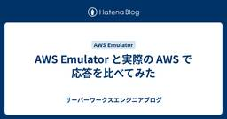
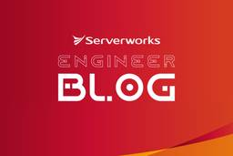
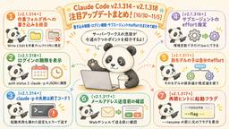

サーバーワークスエンジニアブログ
https://blog.serverworks.co.jp/
AWSトップエンジニア数「AI」「セキュリティ」部門で国内No.1のサーバーワークスのエンジニアが、AWSに関する技術情報をお届けします。
フィード

AWS Emulator と実際の AWS で応答を比べてみた
サーバーワークスエンジニアブログ
今日誕生日の人、おめでとうございます🎉 エデュケーショナルサービス課の森純子です。 2026年11月11日のアップデートで、AWS Emulator が利用可能になりました🎉。AWS の API をローカルでエミュレートするツールで、既存の AWS CLI / SDK の呼び出し先を向けるだけで動きます。AWS アカウントもデプロイも不要、追加料金なしです。 AWS Emulator is now available for building and testing AWS applications locally（2026年11月11日): aws.amazon.com ということで、やって…
1日前

Amazon FSxへのWindowsファイルサーバー移行における設計・構築時の注意点（AWS DataSync・Robocopy編）
サーバーワークスエンジニアブログ
こんにちは！イーゴリです。 本記事では、オンプレミスのWindowsファイルサーバー（SMB）からAmazon FSx for Windows File ServerまたはAmazon FSx for NetApp ONTAPへデータを移行する際に、設計・構築・PoC・本番切り替えで確認すべき事項を整理します。 DataSyncとRobocopyのどちらを選ぶべきかについては、別記事「AWSへの移行時にAWS DataSyncとMS Robocopy、どちらを選ぶべき？正しい使い分けを解説」で比較しています。本記事は、選定した方式を実際に安全に構築・実行するためのチェックリストとして利用するこ…
2日前

Fable 5.2・Mythos 5.2 リリース！単価20%減とFast mode対応
サーバーワークスエンジニアブログ
はじめに サーバーワークスの池田です。 2026年11月9日（米国時間）、Anthropic が Claude Fable 5.2 と Claude Mythos 5.2 を発表しました。5.1 の後継として性能を高め、単価20%減と Fast mode（高速モード）対応を実現しています。本記事では2026年11月10日時点の公式情報をもとに、変更点と Claude Code での使い方を解説します。 出典: Introducing Claude Fable 5.2 and Claude Mythos 5.2 この記事で分かること Fable 5.2 と Mythos 5.2 の違いと利用条件…
3日前

【New Relic】New Relic Database 360 を活用してクエリ・実行計画・待機イベントまで可視化してみた
サーバーワークスエンジニアブログ
New RelicのDatabase 360を使い、Aurora（RDS MySQL）のメトリクス、クエリパフォーマンス、実行計画、待機イベントをECS Fargate上のNRDOT Collectorで可視化する検証手順を備忘録として解説します。
3日前

Parameter Store に組み込みデータ型が追加されたので確認してみた
サーバーワークスエンジニアブログ
今日誕生日の人、おめでとうございます🎉 エデュケーショナルサービス課の森純子です。 2026年11月5日のアップデートで、AWS Systems Manager Parameter Store が 13個の組み込みデータ型 をサポートしました🎉。パラメータの作成・更新時に、IP アドレス・AWS アカウント ID・JSON などの形式を Parameter Store 側が自動で検証し、形式に合わない値を弾いてくれます。これにより、自前のバリデーションロジックが不要になります。 AWS Systems Manager Parameter Store now allows organizatio…
5日前

Claude Code更新 書き込み制限・ログイン期限【10/30〜11/5】
サーバーワークスエンジニアブログ
はじめに サーバーワークスの池田です。 今週（2026年10月30日〜11月5日）は、npmでv2.1.314〜v2.1.318の5バージョンが公開されました。公式CHANGELOGに節があるのはv2.1.314・v2.1.316・v2.1.317・v2.1.318の4つで、計345項目です。v2.1.315には節がなく、v2.1.313はnpmに公開されていません。 動作確認は2026年11月6日に、実機のv2.1.318で行いました。 この記事で分かること 作業ディレクトリの外への書き込みを止める設定と、その例外を紹介します。 claude -pでログインの期限を確認する方法と、失敗を終了…
5日前

CCAO-F は全 Claude 利用者が取得すべき AI 時代に必要な試験でした
サーバーワークスエンジニアブログ
セキュリティサービス部 佐竹です。CCAO-F を受験＆合格しましたので、本試験が AI 時代に必要だと思った背景と、実際の Claude に関する試験のファーストインプレッションを記載しておこうと思います。AI の不正確な利用による事故が散見される今、組織で Claude を使う全員が基礎を学ぶことが、確実なリスク対策の1つになるのだと感じます。
9日前
Step Functions のステート間で値を受け渡す方法を整理してみた【コンソールで検証】
サーバーワークスエンジニアブログ
この記事で確かめた「値の受け渡し」を、先に1枚にまとめます。 はじめに お客様から「Step Functions のジョブ同士で値を受け渡せますか？」という質問をいただきました。Airflow の XCom のようなことができるかを、AWS マネジメントコンソールで動かして確かめました。 今回の結論（先に） 受け渡せます。前のステートの出力は、すぐ次のステートの入力になります。 離れたステートで使いたい値は、変数（Assign）に入れます。Airflow の XCom に一番近い機能です。 同じステートの中では、Assign した値をそのステートの Output で読めません。新しい値が使える…
9日前
【3-Legged OAuth】Amazon QuickのユーザーにSnowflakeの権限（RBAC）を継承する方法
サーバーワークスエンジニアブログ
さとうです。 久々のブログです。タイトル通り、Amazon Quick（以下Quick）とSnowflakeの3-Legged OAuthを試してみたのでまとめたいと思います。 実現したいこと 何が嬉しいのか 3-Legged OAuth（3LO）とは 認証認可のシーケンス やってみた シナリオ 前提条件 事前準備 Snowflakeの準備 1. 売上テーブルとサンプルデータ 2. 支店ごとのロールとユーザー 3. 行アクセスポリシー（RLS）とマスキングポリシー 4. QuickからOAuthで接続するためのセキュリティ統合 Quickの準備 ダッシュボードの作成 Quickのデータソース〜…
10日前
AWS CloudFormationのスタック更新の簡素化されたロールバックを使ってみた
サーバーワークスエンジニアブログ
サーバーワークスの嶋田です。 2026年10月22日、AWS CloudFormation（以下、CloudFormation）に「強制ロールバック（force rollback）」が加わりました。 aws.amazon.com スタックの更新とロールバックが両方失敗して UPDATE_ROLLBACK_FAILED で止まったとき、スキップするリソースを CloudFormation が自動で判断し、1回の操作でロールバックを完了させる機能です。 ただし、スキップしたリソースは元に戻りません。強制ロールバックの発表でも、使ったあとの手順として、2025年11月に加わったドリフト対応変更セット…
11日前
Claude Securityプラグインが何をやっているか覗いてみた👁️
サーバーワークスエンジニアブログ
（本記事の本文は作者が概ね作成していますが、レビュー時にAIを活用しています） MS部サービス基盤開発課兼ドラクエ部のくればやしです。ドラクエの天空シリーズのリメイクを勝手に期待しているのですが、出ることはあるのでしょうか…（ドラクエⅤをテレビの画面でゆったりプレイしたいのです）。 アプリケーションの脆弱性診断には様々なツールが存在しますが、Claude Codeを普段から利用している現場であれば、Anthropic社の公式プラグインである「claude-security」はその強力な味方になってくれるものと思いますし、多くの現場で活用されているのではと思います。 github.com 使い方…
12日前
Claude Code更新 MCPタスク・ultrathink【10/23〜29】
サーバーワークスエンジニアブログ
はじめに サーバーワークスの池田です。 今週（2026年10月23日〜29日）は、v2.1.310・v2.1.311・v2.1.312の3バージョンが対象です。公式CHANGELOGは計157項目で、順に26・92・39項目です。v2.1.309は前週の記事で扱ったため、対象から外しています。 動作確認は2026年10月30日に、実機のv2.1.312で行いました。 この記事で分かること MCP tasksを使える条件と、停止・終了・再開時の扱い。 ultrathinkがxhighで動くモデルと、effort表示の改善。 クラウド環境の設定画面と、セットアップスクリプト用エディタの変更。 今週…
12日前
ISUCON2026参加記録ー開催を前日に知ってからの軌跡
サーバーワークスエンジニアブログ
ISUCON2026に個人で参加した時の状況や感想を記事にしてみました。AIとどう付き合うかが課題で、ボトルネック分析をどう考えてどう改善していったかの記録です。
12日前
NRQL PredictionsとPredictive AlertsにAdvanced Computeは不要になりました ー Core Observabilityへの移行内容を整理してみた
サーバーワークスエンジニアブログ
New RelicのNRQL PredictionsとPredictive AlertsがCore Observabilityに移行。料金モデル別の課金と設定手順を公式ドキュメントで整理しました。
13日前
Step Functions のワークフローを AgentCore Gateway 経由で AI エージェントのツールにしてみた【コンソールで検証】
サーバーワークスエンジニアブログ
はじめに 今回の結論（先に） 実際にチャットで話しかけてみた 背景: なぜ「エージェント × ワークフロー」なのか 構成（概要図） 3 つの層で整理する: 自然言語・MCP ツール・ワークフロー ① ユーザーの言葉（自然言語） ② MCP ツール（ゲートウェイが自動生成） ③ Step Functions のワークフロー 3 つの層の対応 ポイント: 入力の形は、ツールの定義からは分からない ユースケース: エージェントに話しかけてワークフローを動かす（Claude Code で実演） 結果のまとめ 気づいたこと コネクタの仕様をざっくり整理 ピン留めとは ピン留めできるオペレーション・できな…
15日前
【AWS Backup】Timezone等の永続オプション付きAmazon RDS for Oracleでクロスリージョンコピーが失敗する原因と代替策（2026年10月時点）
サーバーワークスエンジニアブログ
※本記事は執筆時点(2026年10月)の情報に基づきます。仕様は変更される可能性があるため、最新の公式ドキュメントもあわせてご確認ください。 はじめに 結論 前提 発生したエラー エラー内容 試してみたこと 原因 AWS Backupはコピー時にオプショングループを引き継がない 手動作成が必要なケース 対処法 注意点 方法1：クロスリージョンコピーだけAmazon RDSネイティブで行う 方法2：Amazon EventBridge + AWS Lambdaで自動化する 検証：AWS Backupが取得したスナップショットを CopyDBSnapshot のコピー元に指定できるか 1. Ama…
16日前
AWS EC2 Auto Scaling の「終了前に起動」をアカウントレベルで有効にしてみた
サーバーワークスエンジニアブログ
今日誕生日の人、おめでとうございます🎉 エデュケーショナルサービス課の森純子です。 Auto Scaling グループのインスタンスを入れ替えるとき、「先に古いインスタンスを止めてから新しいのを起動する」従来の挙動だと、入れ替えの一瞬だけ台数が減って可用性が落ちますよね。かといって「先に新しいのを起動してから古いのを止める」挙動にすると、今度は入れ替え中に台数が一時的に増えて、ほんの少しだけコストが増えます。 2026年10月26日の AWS アップデートで、この「終了前に起動（Launch before terminate）」を、アカウントレベルで全 Auto Scaling グループの既定…
17日前
【パブリックプレビュー版】AWS Well-Architected Agentによる自動レビューと指摘事項の保存
サーバーワークスエンジニアブログ
こんにちは。 アプリケーションサービス本部、DevOps担当の兼安です。 今回は先日パブリックプレビューとして発表されたAWS Well-Architected Agentについて触れてみます。 なお、同サービスは本記事執筆時点（2026年10月下旬）ではパブリックプレビューのため、 一般公開された際には内容やコストが変わる可能性があります。 ご了承ください。 はじめに AWS Well-Architected Agent の前提条件 プロファイルを作成してレビューを実行する 指摘事項の確認 指摘事項はプロファイルを削除すると消える AWS CLIでプロファイルの作成と指摘事項の取得を行う プ…
18日前
Amazon GuardDuty AI Protection の有効化を強くおすすめしています
サーバーワークスエンジニアブログ
セキュリティサービス部 佐竹です。本ブログでは、2026年7月14日に提供開始された Amazon GuardDuty の「AI Protection」について、有効化を強く推奨する理由と、GUI からの有効化手順を解説します。
19日前
Claude Code更新 auto mode設定・API移行【10/16〜22】
サーバーワークスエンジニアブログ
はじめに サーバーワークスの池田です。 今週（10/16〜10/22）は、v2.1.302から309までの8バージョンが対象です。auto modeに環境を教えるガイド付き設定、/usageの修正提案、APIバージョン2026-10-21への移行が中心です。動作確認は2026年10月23日に、実機のv2.1.309で行いました。 v2.1.303と308は、公式の記載が「バグ修正と信頼性の改善」だけです。 この記事で分かること /auto-mode-setupが読むものと、下書きを保存するまでの流れ。 /usageの1行修正提案、fキーの動作、休眠した会話の再開警告。 /claude-api …
19日前
Claude Apps Gateway経由のClaude CodeでAgentCore GatewayのWeb検索を利用する方法と、何がログに残るか
サーバーワークスエンジニアブログ
はじめに こんにちは、久保(賢)です。 Claude CodeをAmazon Bedrock経由で利用する場合、組み込みのWeb検索（WebSearchツール）は利用できません。 Claude Apps Gateway（Anthropicが提供する、Claude Code / Claude Desktop向けのゲートウェイ）を経由してBedrockを利用する構成でも同様です。 一方、Amazon Bedrock AgentCore Gatewayには、マネージドなWeb検索をツールとして提供するWeb Search ツール（コネクタ）があります。 AgentCore GatewayはMCPサー…
20日前
LLMOとSEOの違いを整理する：AIが回答の情報源を得る2つの経路とクローラー
サーバーワークスエンジニアブログ
この記事は 2026年10月 時点の情報です。 はじめに 1. LLMO と SEO の定義と比較表 出典 2. AI が回答の情報源を得る2つの経路 3. 検索連携の流れ（Google の場合） 出典 4. クローラーの3つの役割 出典 まとめ はじめに こんにちは、椎名です。現在OJT先のマーケティング部で学んでいます。 マーケティングの現場では、企業のサービスがお客さまの目に留まるよう、さまざまな取り組みが行われています。そのひとつが SEO（Search Engine Optimization）です。SEO とは、検索エンジンで自分のページを見つけてもらいやすくするための取り組みです。…
22日前
【php2shell】なぜ「memory_limit」のバグに10年以上も誰も気づけなかったのか？PHP特大脆弱性の仕組みを分かりやすく解説
サーバーワークスエンジニアブログ
統合運用課 有川です。 2026年10月21日、PHPのコア機能に存在する極めて深刻な脆弱性「php2shell（CVE-2026-109618 / CVE-2026-109619）」（CVSSスコア 9.2 Critical）が公開されました。 Flatt Securityさんの解説記事などを読んで、「一体どういうことなの…？」と衝撃を受けた方も多いのではないでしょうか。（参考：Flatt Security 技術ブログ） この脆弱性、一言でいうと「WordPressなどのWebアプリが動き出す『前』の段階で、PHP本体のバグを突かれて認証なしでサーバーを乗っ取られる（RCE：リモートコード実…
23日前
CloudWatch アラームのタグを通知に載せてみた
サーバーワークスエンジニアブログ
今日誕生日の人、おめでとうございます🎉 エデュケーショナルサービス課の森純子です。 多数のアラームを1つの SNS トピックに集約して運用していると、通知メールを見た瞬間には「これはどのチームの、どの環境のアラーム」とすぐには分かりませんよね。2026年10月20日の AWS アップデートで、アラームに付けたタグを通知（SNS・Lambda・EventBridge）のペイロードに直接含められるようになりました🎉 これで、メールを見た瞬間に判断がつきそうです。 Amazon CloudWatch Alarms now supports tags in alarm actions payload（…
24日前
motoでAWSに依存するPythonコードをテスト — 基本の使い方と気をつけたいポイント
サーバーワークスエンジニアブログ
はじめに こんにちは、アプリケーションサービス本部の遠藤です。 最近、Amazon S3・Amazon DynamoDBに依存するPythonの処理に対して、motoを使ったユニットテストを実装する機会がありました。実際のAWSアカウントに接続せず、ローカルやCI上で高速にテストを回せる点が便利だった一方、使ってみて初めて気づいた注意点もいくつかあったので、基本的な使い方とあわせてまとめます。 motoとは motoは、boto3（AWS SDK for Python）の呼び出しをプロセス内でインメモリのフェイクAWSに差し替えてくれるライブラリです。LocalStackのように別途コンテナを…
24日前
AWS Lambda Web Functions で LLM の待ち時間は課金されない？ アクティブ CPU 課金で得する処理・損する処理
サーバーワークスエンジニアブログ
AWS Lambda Web Functions で、LLM の待ち時間は本当に課金されないのか。アクティブ CPU 課金の仕組みを整理し、LLM を待つ API で得をする理由と、メモリ課金やタイムアウト、短い CPU 処理で損をするケースを試算で確かめます。AgentCore Runtime との違いにも触れます。
25日前
AWS Data Transfer Terminal（東京拠点）の利用条件と仕様を整理してみた
サーバーワークスエンジニアブログ
最大200Gbpsでのデータ転送が可能なAWS Data Transfer Terminal（DTT）について、東京拠点での利用方法や必要な機材、予約ルール、料金体系を詳しく解説。大容量データ移行の選択肢として検討ください。
25日前
Aurora DSQL で部分インデックスがサポートされたので試してみた
サーバーワークスエンジニアブログ
はじめに この記事で学べること 前提知識・条件 部分インデックスとは？ やってみた 検証の題材 Step 1: テーブル作成とデータ投入 Step 2: 部分インデックスの作成と ASYNC 完了確認 Step 3: EXPLAIN ANALYZE で使われ方を比較 Step 4: インデックスのサイズを比較…できなかった まとめ はじめに こんにちは！ アプリケーションサービス本部ディベロップメントサービス1課の森山です。 2026 年 10 月 2 日に、Amazon Aurora DSQL が部分インデックス（Partial Indexes）をサポートしました！ aws.amazon.c…
25日前
Amazon EC2で起動させた自作MCPサーバーをClaude Codeから使用できるようにしてみた
サーバーワークスエンジニアブログ
はじめに 検証環境 構成図 EC2にMCPサーバーを起動する方法について AWS外から自作MCPサーバーへ通信できるように設定する Claude Codeから使える様にする 試してみる AIがMCPツールを使うかどうかをどのように決めているか おわりに はじめに みなさん、こんにちは！ アプリケーションサービス部DS3課の杉山です。 技術の検証をしたい時は小さな情報が役に立ちます。 今回はそんな小さな検証として、Amazon EC2(以降EC2)で起動させたMCP(Model Context Protocol)サーバーとClaude Codeの連携のさせ方を検証してみました。 本記事が皆様のお…
25日前
Secrets Manager の推奨3つ、全部従うべき？
サーバーワークスエンジニアブログ
こんにちは、サーバーワークスの嶋田です。 2026年10月1日に「AWS Secrets Manager コンソールの実行可能な推奨事項でシークレットのセキュリティ体制を改善」というアップデートがリリースされました。 AWS Secrets Manager が AWS 推奨アクションフレームワーク（AWS Recommended Actions）と統合され、コンソール上でシークレットごとの改善提案が表示されるようになりました。 ただ、推奨が表示されたからといって、そのまま従えばよいとは限りません。そこで今回は、表示された推奨ごとに公式ドキュメントでの根拠を確認し、そのうえでカスタマーマネージド…
1ヶ月前